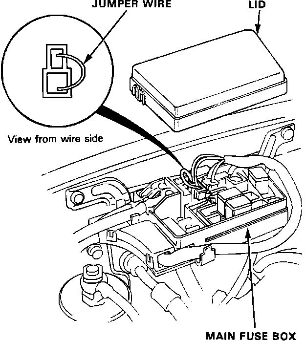
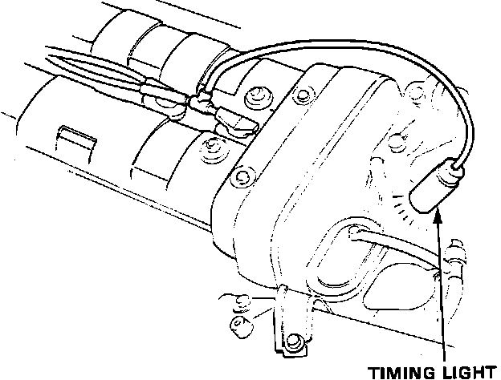
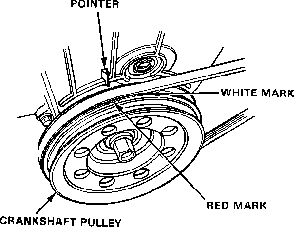
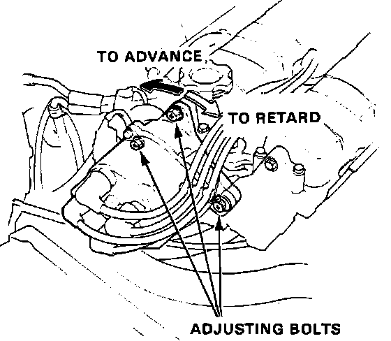

Ignition Timing Adjustment
IGNITION TIMINGConnecting Jumper Wire:

1. Start engine and run until it reaches operating temperature (cooling fan comes on).
2. Remove the fuse box lid and connect a jumper wire between the br/bl and br terminals as shown.
Connecting Timing Light:

3. Connect a timing light to engine.
4. With engine at idle, (M/T 750 ± 50 rpm A/T 700 ± 50 rpm) aim the timing light at the front crankshaft pulley timing marks.
Timing Marks:

5. Verify that the pointer is aligned with the red mark on the crankshaft pulley.
Distributor Adjustment:

6. If timing marks are not aligned, loosen distributor adjusting bolts and turn the distributor housing to adjust to specification.
Ignition Timing:
12° ± 2° BTDC (red mark)
7. Tighten the mounting bolts and recheck timing.
8. Remove the jumper wire from the fuse box and replace the lid.